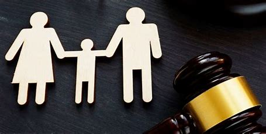
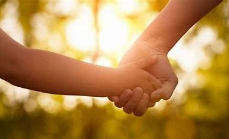

Interessados em adotar precisam se inscrever no Cadastro Nacional de Adoção (CNA) e passar por uma avaliação psicossocial, conduzida por uma equipe técnica do Juizado da Infância e da Juventude. São realizadas entrevistas, visitas domiciliares e análise da situação social, psicológica e econômica dos adotantes. Após essa avaliação, se forem considerados aptos, os candidatos são habilitados e incluídos no cadastro.
 Espera por uma Criança ou AdolescenteDepois de habilitados, os adotantes esperam ser chamados pelo sistema quando há uma criança ou adolescente disponível e com perfil compatível com as preferências e capacidade dos adotantes. É possível definir algumas características, como faixa etária, condições de saúde e se aceitam irmãos, mas uma abertura maior pode reduzir o tempo de espera.
Apresentação e Período de ConvivênciaQuando uma criança é identificada, o juiz autoriza a apresentação aos adotantes, e inicia-se um período de convivência para adaptação, em que ambos têm a oportunidade de se conhecer. Esse período é essencial para confirmar se há afinidade e adaptação, e pode variar de acordo com o desenvolvimento do vínculo entre as partes.
Adoção Legal e DefinitivaSe o período de convivência for bem-sucedido, o juiz formaliza a adoção, concedendo a guarda definitiva. A certidão de nascimento da criança é reemitida com o nome dos pais adotivos, e o vínculo jurídico com a família biológica é rompido.
 Acompanhamento Pós-AdoçãoEm alguns casos, há um acompanhamento pós-adoção para apoiar a adaptação do adotado e da família.